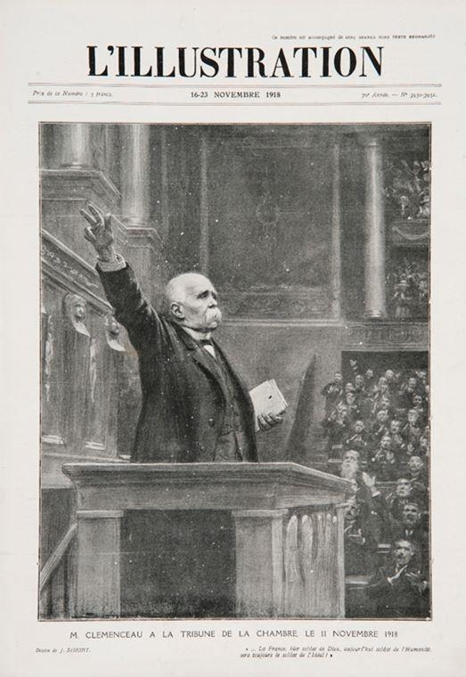
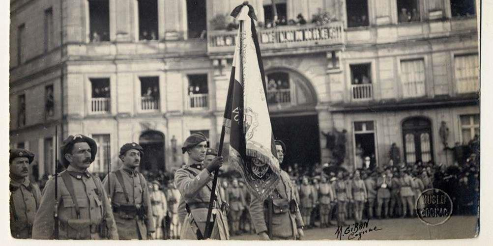
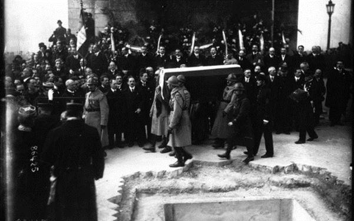
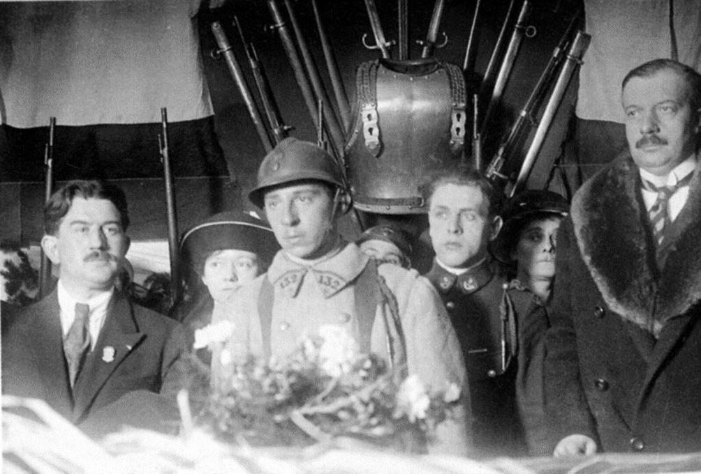
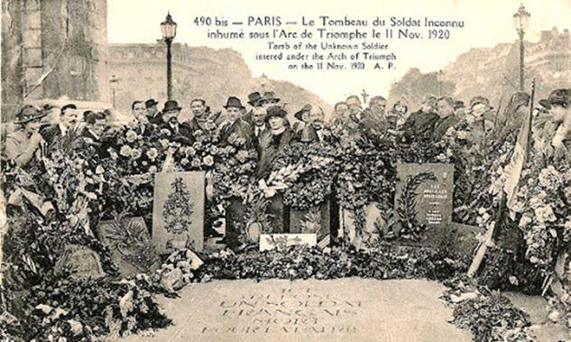

Le 11 novembre, jour anniversaire de l'armistice de la Première Guerre mondiale, est institué pour « célébrer la commémoration de la victoire et de la paix » par la loi du 24 octobre 1922. Le rassemblement devant le Monument aux morts de la commune, la Marseillaise, la sonnerie « Aux morts », les drapeaux qui s'inclinent, la minute de silence… ont marqué la grande majorité des Français.
Bien ancrée dans le calendrier républicain, nul ne songerait à remettre en cause cette journée particulière dont l’idée revient pourtant aux Britanniques !
Un peu d’Histoire… Le 11 novembre 1918, Georges Clemenceau, Président du Conseil et Ministre de la Guerre, prend la parole au Sénat : « À la Chambre, j’ai seulement voulu prononcer quelques paroles que je suis heureux d’avoir l’occasion de répéter ici. J’ai dit au nom du peuple français, du Parlement, du gouvernement de la République française, que la France une et indivisible, comme disaient nos pères, salue l’Alsace et la Lorraine enfin retrouvées. (Vifs applaudissements prolongés.) J’ai ajouté que c’était là l’œuvre de nos grands morts (Nouveaux applaudissements. Acclamations prolongées) qui nous ont préparé cette admirable journée. Grâces leur soient rendues. (Nouvelles acclamations). Ni eux ni leurs familles ne seront oubliés et si le pouvoir m’en est donné, il faudra
qu’un jour de commémoration soit institué en leur honneur par la République française. (Vifs applaudissements) [...] » (Journal des débats politiques et littéraires du 13 novembre 1918)
Le tout était de savoir à quelle date serait fixé ce jour de commémoration. Le 25 octobre 1919, l’Assemblée vote la loi n°15135 relative à la commémoration et à la glorification des morts pour la France au cours de la grande guerre. Son article premier, alinéa 6, dispose que « Tous les ans, le 1er ou le 2 novembre, une cérémonie sera consacrée dans chaque commune à la mémoire et à la glorification des héros morts pour la patrie. Elle sera organisée par la municipalité avec le concours des autorités civiles et militaires. » Les premières cérémonies d’hommage auront lieu les 1er et 2 novembre 1919 comme le rapporte le quotidien « La Croix » du 4 novembre 1919 : « Le 1er et 2 novembre ont été marqués, dans tout le pays, par des manifestations où le peuple de France, entourant ses représentants officiels, a porté son hommage de reconnaissance à la foule glorieuse des morts pour la patrie : partout ces douloureuses cérémonies, la prière pour les âmes de ceux qu’il s’agissait d’honorer a mis le reflet de l’espérance chrétienne.
En 30 000 communes, il a été, le 2 novembre remis officiellement 1.500.000 diplômes aux familles dont un ou plusieurs membres sont morts pour la France. » Le consensus est général avec une petite dissonance du côté du journal « L’Humanité » qui indique qu’« Il y a quelque chose de guindé dans chaque cortège officiel, et les visites du président de la République, suivi de généraux et d’officiers, aux cimetières de Bagneux, d’Ivry et de Pantin, étonnent d’avantage qu’elles n’émeuvent et ne consolent. (Édition du 2 novembre 1919) Au lendemain des cérémonies, Raymond Poincaré, Président de la République, se rend en voyage officiel au Royaume-Uni afin de réaffirmer l’entente franco-britannique. Au Royaume-Uni, également, on réfléchit à commémorer ceux qui sont morts durant la Grande Guerre. En octobre 1919, Sir Percy Fitzpatrick envoie une note au War Cabinet dans laquelle il évoque le désir de la population de commémorer de manière solennelle le sacrifice des soldats de l’Empire et suggère d’observer une coutume rapportée de son Afrique du Sud natale : 3 minutes de silence pour se souvenir de ceux qui sont tombés. Cette proposition a l’heur de plaire au Roi George V qui demande, alors, à ses sujets de : « Tuesday next, November 11, is the first anniversary of the Armistice, which stayed the world wide carnage of the four preceding years and marked the victory of Right and Freedom. I believe that my people in every part of the Empire fervently wish to perpetuate the memory of the Great Deliverance, and of those who have laid down their lives to achieve it. To afford an opportunity for the universal expression of this feeling, it is my desire and hope that at the hour when the Armistice came into force, the eleventh hour of the eleventh day of the eleventh month, there may be for the brief space of two minutes a complete suspension of all our normal activities...No elaborate organisation appears to be required. At a given signal, which can easily be arranged to suit the circumstances of each locality, I believe that we shall all gladly interrupt our business and pleasure, whatever it may be and unite in this simple service of Silence and Remembrance » (Daily Telegraph du 7 novembre 1919).
Le voyage officiel de Raymond Poincaré était, bien entendu, couvert par la presse française qui rapporte le message du roi suscitant des interrogations et des débats comme le rapporte, entre autres, le quotidien « Le Matin » du 8 novembre 1919 : « Et nous, Français, que ferons-nous ? Laisserons-nous passer sans manifester notre reconnaissance et notre souvenir le jour qui évoque pour nous, plus encore que pour l’Empire britannique, « la Grande Délivrance » ? Continuerons-nous à vaquer à nos occupations ou à nos plaisirs comme si nous n’avions pas 1.400.000 morts à honorer pendant cette journée où nos amis et alliés commémoreront dans le recueillement le sacrifice de ceux qui sont tombés, et ne trouverons-nous pas un instant à consacrer à nos disparus ? La question vaut d’être posée ?»
Le journal « L’Intransigeant » dénonce, quant à lui, l’incurie du gouvernement français par rapport à celui du Roi qui est capable d’organiser, sans impact sur la productivité des entreprises, une « émouvante commémoration ». Joseph Galthier exprimera, dans « Le Temps » du 11 novembre 1919, ce que pense l’opinion publique française de cette initiative britannique : « Tout un peuple, à travers l’espace, dans le vaste monde, communiera dans la pensée des morts, des morts fauchés par la guerre. Par sa simplicité, ce geste émouvant est la seule cérémonie qui convienne à la grandeur des sacrifices » Les lycéens parisiens se rassemble et réclament au ministre de l’Instruction publique, Louis Lafferre, l’octroi d’un jour de congé en célébration de la fin de la guerre, semblant illustrer, ainsi, les propos de Jean Guiraud dans « La Croix » du 8 août 1919 : « Les élèves n’ont pas repris de sérieuses habitudes de travail. Les fêtes qui se sont succédées depuis l’armistice, les congés qui se sont multipliés ont distrait leur attention. Ils semblent vouloir se reposer des fatigues de leurs aînés. » On aurait tort, toutefois, de se gausser de ces lycéens car ce 11 novembre 1919, les commémorations, se résument, à Paris, en une messe solennelle à Saint-Louis-des-Invalides en présence du Maréchal Foch ; la vente de drapeaux aux enchères par la Ligue contre la mortalité infantile, « drapeaux signés à Versailles le 28 juin 1919 par les « quatre » et par les maréchaux » et des matinées théâtrales, des spectacles variés ou des rencontres sportives… !
Mais revenons à nos jeunes lycéens parisiens. Ces jeunes gens ont pris conscience de l’importance symbolique du geste commémoratif initié par le roi à Londres. Leur décision de célébrer le premier anniversaire de la signature de l’Armistice est prise. Ainsi 500 d’entre eux se retrouvèrent aux Invalides pour accueillir le Maréchal Foch à la messe commémorative. D’autres forment un cortège et se rendent au pied de la statue « Strasbourg » sur la Place de la Concorde pour y déposer des gerbes de fleurs dans le plus grand recueillement. Après cet anniversaire « manqué » les Parlementaires vont se pencher sur le problème, car cela devient un problème politique… !
En effet, en 1920 on va célébrer le cinquantenaire de la République et l’intention du gouvernement est de rendre hommage à Gambetta en transférant ses cendres au Panthéon tout en soulignant le retour de l’Alsace-Lorraine au sein de la Patrie grâce au sacrifice des Poilus… Des « hommages des vainqueurs de 1918 aux grands vaincus de 1870, qui lorsque tout était perdu sauvèrent l’honneur de la France » ( Le Journal des débats politiques et littéraires du 7 juillet 1920).
La loi du 1er septembre 1920 dispose que le 11 novembre 1920 sera férié pour célébrer cet hommage sous la forme du transfert du cœur de Gambetta et l’inhumation du Soldat inconnu comme le rapporte « La Croix » du 12 novembre 1920 : « La fête nationale du 11 novembre avait un double objet : l’anniversaire de la victoire et le cinquantenaire de la République. Ces deux buts ont été symbolisés par deux transferts très solennels. Le corps d’un « soldat inconnu » a été transporté pour reposer sous l’Arc de Triomphe de l’Etoile, symbole de la reconnaissance française envers 1 million 500 000 héros morts au cours de la grande guerre pour sauver la patrie. Cette reconnaissance immense et sans réserve de cette partie du programme soulevait un enthousiasme universel. Le cœur de Gambetta, en souvenir de la proclamation de la République en 1870 a été joint au « soldat inconnu » pour être déposé au Panthéon. Gambetta étant fort discutable à divers points de vue et le Panthéon étant une église désaffectée, cette partie du programme suscitait des sentiments divers. Mais le « soldat inconnu » a tout couvert de sa protection anonyme et la fête populaire a été splendide, joignant l’apothéose du patriotisme de 1870-1871 à celui du patriotisme de 1914-1918, dans l’apothéose générale de la France aimée de tous ». Il faut savoir que dès 1916 le président de la section locale du Souvenir français de Rennes avait proposé qu’un soldat français à l’identité « inconnue » soit inhumé au Panthéon pour y représenter ces milliers d’hommes privés de sépultures.
En 1920, lors des discussions sur la célébration du cinquantenaire, la proposition de l’inhumation au Panthéon pour un dépôt à l’Arc de Triomphe. C’est ainsi que la loi 8 novembre 1920, ordonna « la translation à Paris et le dépôt à l’Arc-de-Triomphe des restes d’un soldat inconnu mort pour la France au cours de la grande guerre ». Deux jours avant la cérémonie, huit cercueils issus des différents secteurs de l’ancienne « zone des armées » sont rassemblés dans la citadelle de Verdun. Le ministre des Pensions, André Maginot, désigne le caporal Auguste Thin pour choisir une des huit dépouilles en déposant un bouquet sur le cercueil.

Auguste Thin choisit le cercueil du soldat inconnu (1920)
Le 11 novembre, la procession des deux reliques, le cœur de Gambetta et le Soldat inconnu, quitte la place Denfert Rochereau. Le cercueil du Soldat inconnu est entouré d’une famille fictive représentant les familles endeuillées et suivi par une dizaine de milliers de soldats de chaque arme.
Le cortège traverse Paris jusqu’à l’Arc de Triomphe, en s’arrêtant, comme prévu, au Panthéon. À la fin de la journée, le cercueil est emmené dans une pièce à l’intérieur de l’arche où il restera jusqu’à l’inhumation du 28 janvier 1921. Après d’âpres discussions parlementaires, la loi du 24 octobre 1922 est promulguée : « Article. 1er.— La République française célèbre annuellement la commémoration de la Victoire et de la Paix. Art. 2. — Cette fête sera célébrée le 11 novembre, jour de l'anniversaire de l'armistice. Le 11 novembre sera jour férié. Art. 3, — La loi du 13 juillet 1905 concernant les fêtes légales -ne sera pas applicable à la fête du 11 novembre. Art. 4. — La loi du 9 novembre 1921 est abrogée. La présente loi, délibérée et adoptée par le Sénat et par la Chambre des Députés, sera exécutée comme loi de l'Etat. » Pour mémoire, la loi du 9 novembre 1921 fixait l’anniversaire de l’Armistice le 11 novembre si c’est un dimanche ou, dans le cas contraire, le dimanche suivant…suscitant la ire des anciens combattants qui a conduit à la loi d’octobre ! Pour compléter, il faut savoir que la loi du 28 février 2012 dispose que « Le 11 novembre, jour anniversaire de l'armistice de 1918 et de commémoration annuelle de la victoire et de la Paix, il est rendu hommage à tous les morts pour la France. Cet hommage ne se substitue pas aux autres journées de commémoration nationales. » Petite curiosité juridique la loi du 25 octobre 1919 qui, rappelez-vous, dispose dans son article 6 que « Tous les ans, le 1er ou le 2 novembre, une cérémonie sera consacrée dans chaque commune à la mémoire et à la glorification des héros morts pour la patrie. Elle sera organisée par la municipalité avec le concours des autorités civiles et militaires. », n’a jamais été abrogée…
Partager cette page